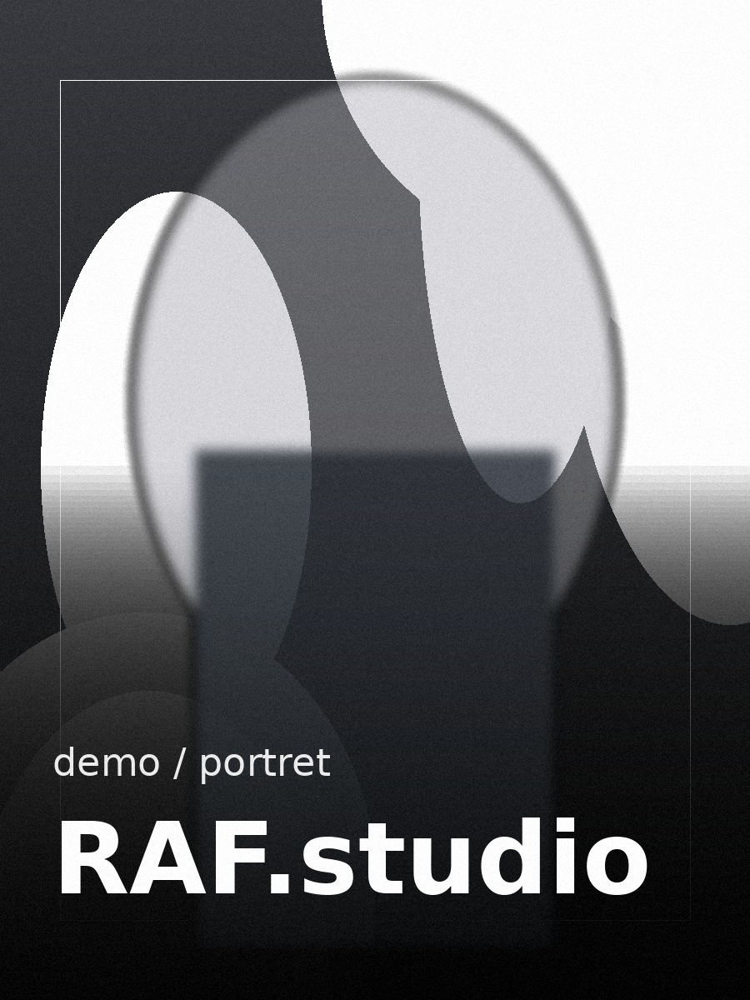

DWA ŚWIATY.
JEDEN STYL.
Osobne działy fotografii i filmu, wspólna estetyka RAF.studio.


O MNIE
CZŁOWIEK PO DRUGIEJ STRONIE KAMERY.
Tworzę zdjęcia i filmy dla ludzi oraz marek. Lubię czysty obraz, prawdziwe emocje, dobre światło i realizacje, które nie wyglądają jak gotowy szablon.
FOTOGRAFIA
Śluby • sesje • eventy • produkt
FILM
Reklama • social • event • slow motion
RAF.studio
Jedna spójna identyfikacja.
OPINIE.
Rekomendacje klientów.
MARKI.
Wybrane współprace.
KONTAKT
ZRÓBMY COŚ DOBREGO.
Fotografia, film albo oba naraz.
Dane kontaktowe są używane wyłącznie do obsługi zapytania. Polityka prywatności.